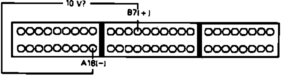
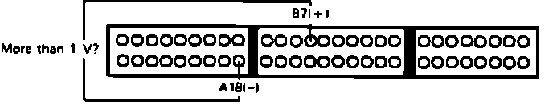

Inspection Procedure
Before testing verify proper operation of the shift indicator. If indicator does not light properly in all gears, refer to CHASSIS ELECTRICAL DIAGRAMS for additional information, before proceeding.1. Install test harness between ECU and harness connector. If test harness is not available, carefully backprobe wires at ECU connector.
2. Disconnect connector B from main wire harness only, leave connected to ECU.
3. Turn ignition on.
A/T Shift Position Signal Diagnosis:

4. Measure voltage between B7 and A18.
Approx. 10 volts, proceed to next step.
Not approx. 10 volts, replace electronic control unit. End of test.
5. Reconnect connector B to main harness.
A/T Shift Position Signal Diagnosis:

6. Check voltage between terminals B7 and A18 with shifter in NEUTRAL position.
Less than 1 volt, proceed to step 8.
More that 1 volt, proceed to next step.
7. Repair open LT/GRN wire between ECU terminal B7 and instrument cluster.
8. Check voltage between terminals B7 and A18 with shifter in PARK position.
Less than 1 volt, proceed to next step.
More that 1 volt, replace shift position indicator. End of test.
9. A/T shift position signal functioning properly. No further testing required.